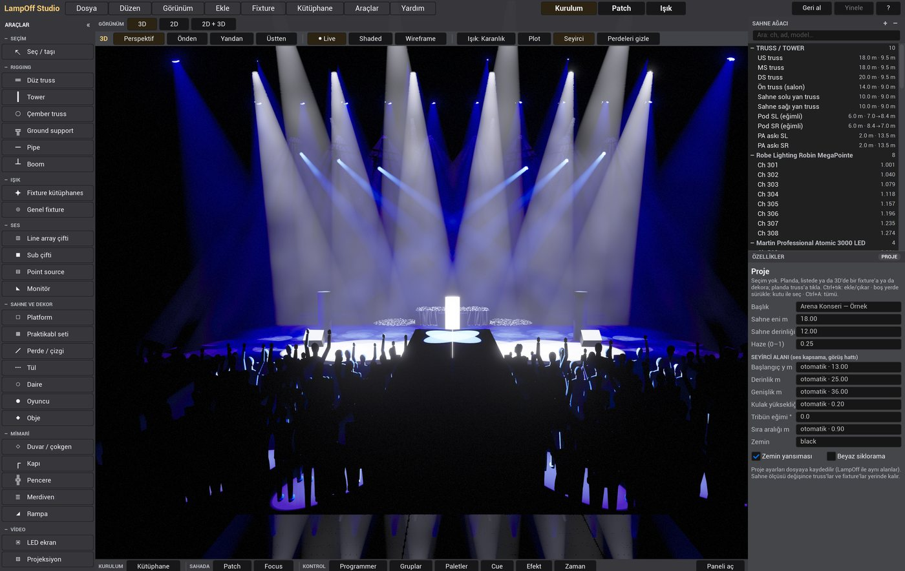
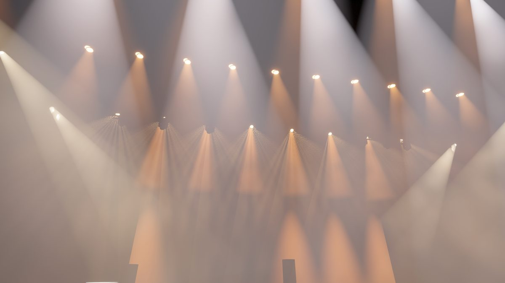

LampOff Studio · Bientôt
La version de bureau est en préparation.
LampOff Studio est un logiciel de bureau qui ouvrira les projets LampOff dans une scène 3D sous Windows et macOS. La date de sortie sera annoncée sur cette page.
Premier aperçu

Scène 3D : haze, faisceaux et public


Issu d’une version de développement de LampOff Studio ; la version finale peut différer.
- Plateformes
- Windows, macOS
- Statut
- En préparation
En attendant, l’app mobile LampOff est disponible sur Android, iPhone et iPad :
Questions : lampoff.info@gmail.com